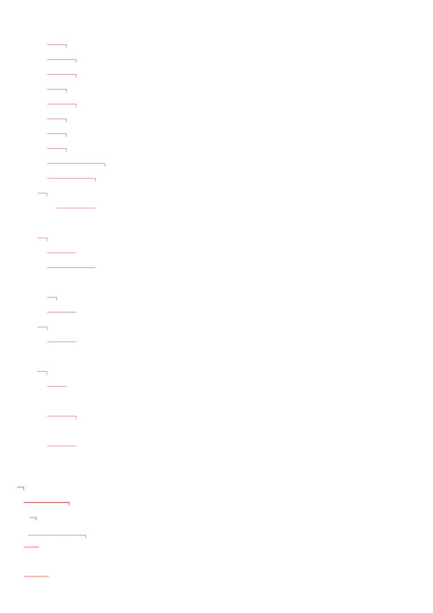
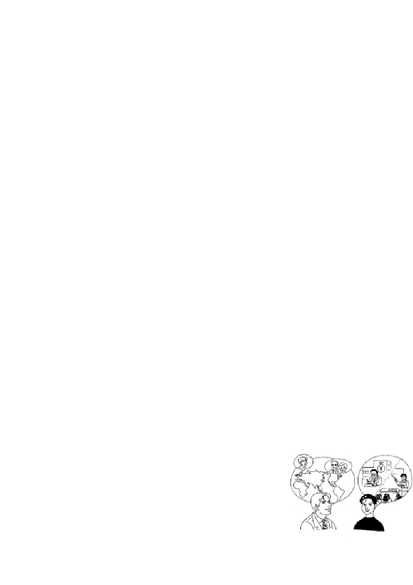
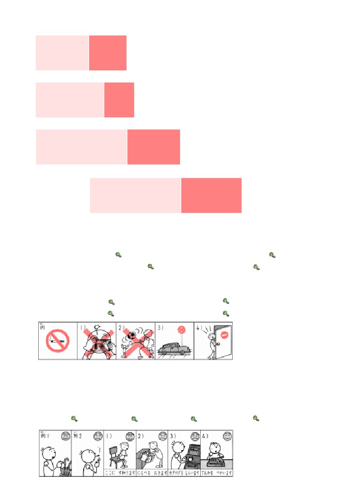
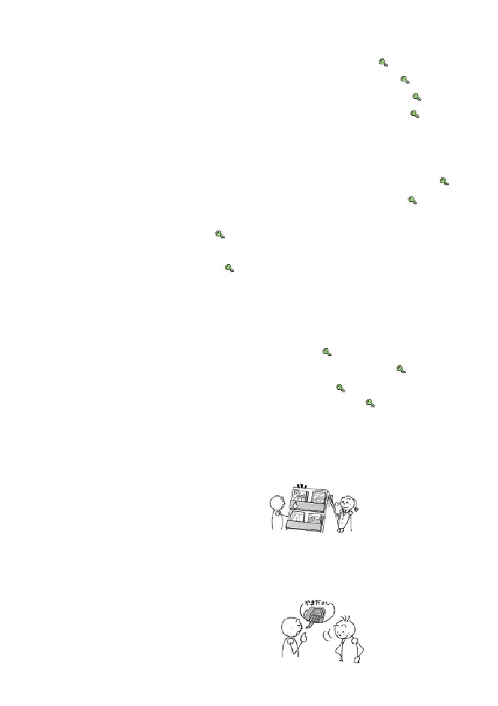
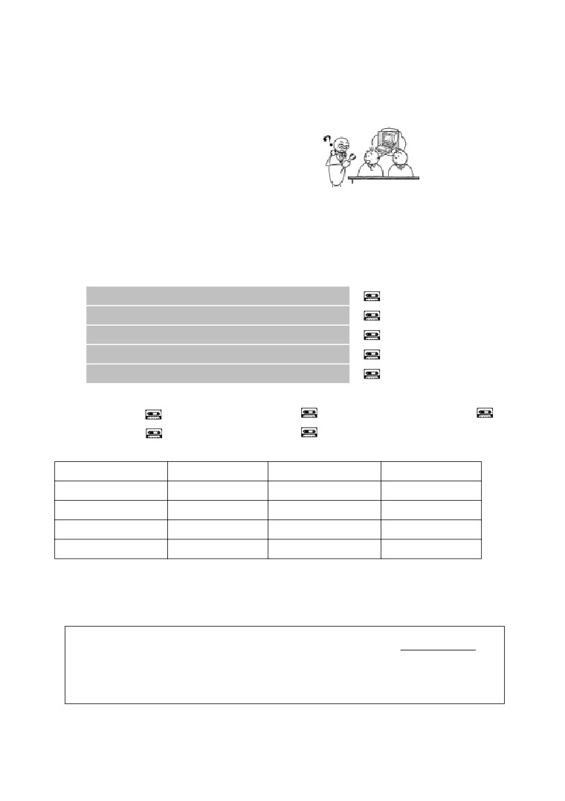
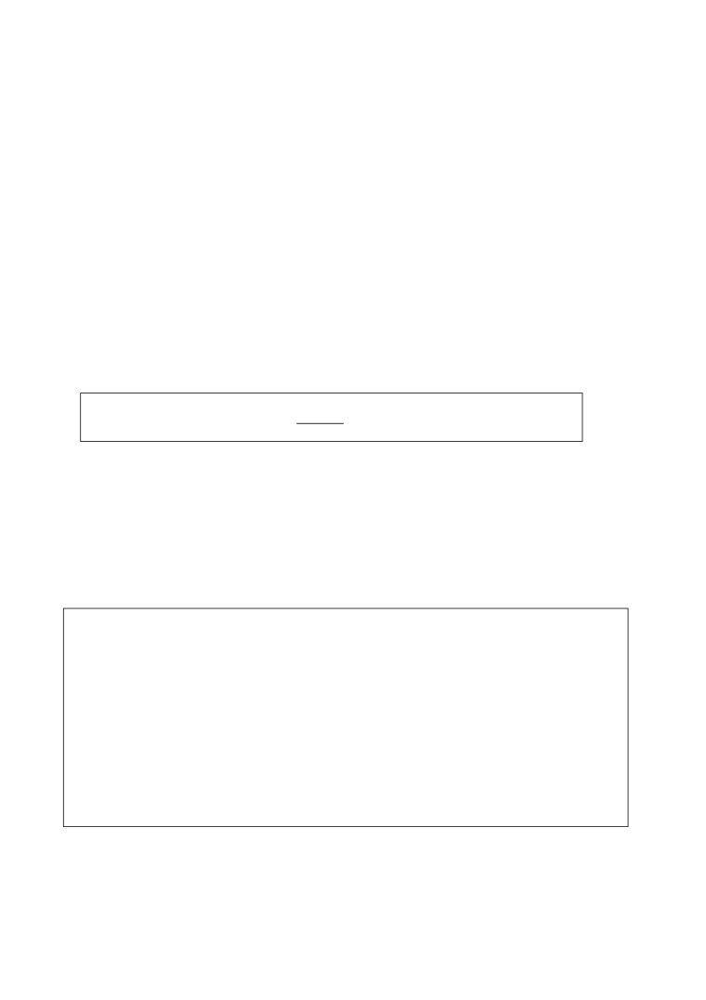
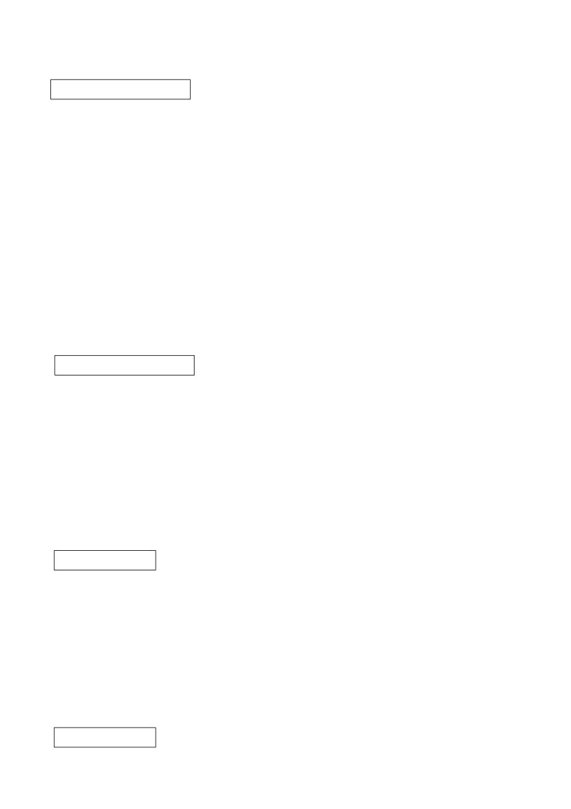

第１５課
課:15 (頁:1/8)
ことば
1. たちます Ⅰ
立ちます
站，立
2. すわります Ⅰ
座ります
坐
3. つかいます Ⅰ
使います
使用，用
4. おきます Ⅰ
置きます
放置，擺放
5. つくります Ⅰ
作ります、造ります 做，製造
6. うります Ⅰ
売ります
賣，銷售
7. しります Ⅰ
知ります
得知
8. すみます Ⅰ
住みます
居住
9. けんきゅうします Ⅲ 研究します
研究
10. しって います
知って います
知道
11.
すんで います
住んで います
居住〔在大阪〕
［おおさかに～］
［大阪に～］
12. しりょう
資料
資料
13. カタログ
產品目錄
14. じこくひょう
時刻表
時刻表
15. ふく
服
衣服
16. せいひん
製品
產品
17. ソフト
軟體
18. せんもん
専門
專業，專長
19. はいしゃ
歯医者
牙科醫生
20. とこや
床屋
理髮店，理髮師
21. プレイガイト
（劇場等的）預售
22. どくしん
独身
單身，未婚
かい わ
■会話
とく
特に
尤其，特別
おも
だ
思い出します Ⅰ
想起來
か ぞく
ご家族
您的家人
いらっしゃいます Ⅰ
有，在（是います的禮貌形）
こう こう
高校
高級中學，高中
---以下單字請自行練習發音---
にっ ぽん ばし
日本橋
大阪的一商業區名稱

ぶん けい
課:15 (頁:2/8)
文型
しゃ しん
と
1.
写真を 撮っても いいです。
も
2.
サントスさんは パソコンを 持って います。
れい ぶん
例文
1.
この カタログを もらっても いいですか。
…ええ、いいですよ。 どうぞ。
じ しょ
か
2.
この 辞書を 借りても いいですか。
いま
つか
…すみません、ちょっと……。 今 使って います。
あそ
3.
ここで 遊んでは いけません。
…はい。
し やく しょ
でん わ ばん ごう
し
4.
市役所の 電話番号を 知って いますか。
し
…いいえ、知りません。
す
5.
マリアさんは どこに 住んで いますか。
おお さか
す
…大阪に 住んで います。
どく しん
6.
ワンさんは 独身ですか。
けっ こん
…いいえ、 結婚して います。
し ごと
なん
7.
お仕事は 何ですか。
きょう し
ふ じ だい がく
おし
…教師です。 富士大学で 教えて います。
せん もん
専門は？
に ほん
び じゅつ
…日本の 美術です。
かい わ
会話
か ぞく
ご家族は？
えい が
ミラー： きょうの 映画は よかったですね。
き
むら
とく
とう
木 村：
ええ。特に あの お父さんは よかったですね。
か ぞく
おも
だ
ミラー： ええ。わたしは 家族を 思い出しました。
き
むら
か ぞく
木 村：
そうですか。 ミラーさんの ご家族は？
りょう しん
あね
ひとり
ミラー： 両親と 姉が 1人 います。
き
むら
木 村：
どちらに いらっしゃいますか。
りょう しん
ちか
す
ミラー： 両親は ニューヨークの 近くに 住んで います。
あね
姉は ロンドンです。
き むら
か ぞく
木村さんの ご家族は？
き
むら
木 村：

にん
ちち
ぎん こう いん
課:15 (頁:3/8)
3人です。 父は 銀行員です。
はは
こう こう
えい ご
おし
母は 高校で 英語を 教えて います。
れんしゅう
練習 Ａ
えん ぴつ
1.
鉛筆で
かいて
も いいですか。
でん わ
この 電話を
つかって
ここに
すわって
さけ
2.
お酒を
のんで
は いけません。
しゃ しん
ここで 写真を
とって
じ てん しゃ
ここに 自転車を
とめて
きょう と
3.
わたしは 京都に
すんで
います
マリアさんを
しって
けっこんして
4. ミラーさんは
IMC で
はたらいて
います。
かい しゃ
えい ご
会社で 英語を
おしえて
に ほん ご がっ こう
に ほん ご
日本語学校で 日本語を
べんきょうして
れんしゅう
練習 Ｂ
れい
つか
つか
1.
例： パソコンを 使います →
パソコンを 使っても いいですか
かえ
け
1)
帰ります →
2) テレビを 消します →
す
まど
あ
3)
たばこを 吸います →
4) 窓を 開けます
→
れい
す
2.
例： ここで →
ここで たばこを 吸っては いけません。
1)
ここで →
2) ここで
→
3)
ここに →
4) ここに
→
れい
かさ
か
3.
例1： → この 傘を 借りても いいですか。
……ええ、いいですよ。 どうぞ。
れい
す
例2： → たばこを 吸っても いいですか。
……すみません。 ちょっと……。
1)
→
2)
→
3)
→
4)
→

れい
し
し
課:15 (頁:4/8)
4.
例1： ミラーさんを 知って いますか。（ はい ） →
はい、知って います。
れい
くるま
も
例2： ミラーさんは 車を 持って いますか。（ いいえ ）
も
→ いいえ、持って いません。
けっ こん
1)
ミラーさんは 結婚して いますか。（ いいえ ） →
おお さか
す
2)
ミラーさんは 大阪に 住んで いますか。（ はい ） →
じ てん しゃ
も
3)
ミラーさんは 自転車を 持って いますか。（ はい ） →
じゅうしょ
し
4)
ミラーさんの 住所を 知って いますか。（ いいえ ） →
れい
やす
でん き せい ひん
う
おお さか
にっ ぽん ばし
5.
例： どこで 安い 電気製品を 売って いますか。（ 大阪の 日本橋 ）
おお さか
にっ ぽん ばし
う
→ 大阪の 日本橋で 売って います。
なに
つく
1)
IMCは 何を 作って いますか。（ コンピューターソフト ） →
みせ
なに
う
ふる
ふく
2)
あの 店で 何を 売って いますか。（ 古い 服 ） →
だい がく
つか
3)
さくら大学は どこの コンピューターを 使って いますか。
でん き
（ パワー電気 ） →
う
どこで コンサートの チケットを 売って いますか。
4)
（ プレイガイド ） →
れい
はたら
でん き
6. 例： シュミットさん・どこ・働きますか（ パワー電気 ）
はたら
→ シュミットさんは どこで 働いて いますか。
でん き
はたら
…パワー電気で 働いて います。
なに けん きゅう
けい ざい
1)
イーさん・何・研究しますか（ 経済 ） →
やま だ とも こ
はたら
ぎん こう
2)
山田友子さん・どこ・働きますか（ アップル銀行 ） →
なに べん きょう
び じゅつ
3)
カリナさん・何・勉強しますか（ 美術 ） →
おし
だい がく
4)
ワットさん・どこ・教えますか（ さくら大学 ） →
れん しゅう
練習 Ｃ
1. Ａ: この カタログ、もらっても いいですか。
Ｂ: ええ、どうぞ。
Ａ: どうも。
し りょう
1) 資料
ち ず
2) 地図
じ こく ひょう
3) 時刻表
やま だ
でん わ ばん ごう
し
2. Ａ:
山田さんの 電話番号を 知って いますか。
Ｂ: ええ。
おし
Ａ: すみませんが、教えて ください。
まつ もと
じゅうしょ
1) 松本さんの 住所
やす
とこ や
2) 安い 床屋
は い しゃ
3) いい 歯医者
な まえ
3. Ａ:
お名前は？

課:15 (頁:5/8)
Ｂ:
ミラーです。
し ごと
Ａ: お仕事は？
かい しゃ いん
Ｂ: 会社員です。
かい しゃ
はたら
コンピューターの 会社で 働いて います。
1)
ワット
きょう し
教師
だい がく
えい ご
おし
大学で 英語を 教えます
2) カリナ
がく せい
学生
ふ じ だい がく
べん きょう
富士大学で 勉強します
3) ワン
い しゃ
医者
こう べ
びょういん
はたら
神戸の 病院で 働きます
もん だい
問題
れい
1.
1)
…例： いいえ、いけません。
れい
じ どう しゃ
う
2)
…例： 自動車を 売って います。
れい
し
ふ じ さん
3)
…例： はい、知って います。富士山です。
れい
す
4)
…例： ロンドンに 住んで います。
れい
ぎん こう いん
5)
…例： 銀行員です。
2.
1)
( ○ )
2)
( ○ )
3)
( × )
4)
( ○ )
5)
( × )
れい
た
た
か
か
3.
例： 食べて
食べます
5)
借りて
借ります
やす
やす
むか
むか
1)
休んで
休みます
6)
迎えて
迎えます
しょく じ
しょく じ
ま
ま
2)
食事して
食事します
7)
待って
待ちます
き
き
はな
はな
3)
来て
来ます
8)
話して
話します
か
か
と
と
4)
書いて
書きます
9)
止めて
止めます
れい
じ しょ
か
4. 例： この 辞書、借りても いいですか。
いま
つか
……すみません、（ 今 使って います ）から。
みせ
まえ
いま
つか
店の 前です わたしのじゃ ありません
今 使って います
えい が
み
し やく しょ
がい こく じん とう ろく
い
映画を 見たいです
市役所へ 外国人登録に 行きます
くるま
と
1)
ここに 車を 止めても いいですか。
みせ
まえ
……すみません、（ 店の前です ）から。
し やく しょ
がい こく じん とう ろく
い
ご ご
やす
2)
（ 市役所へ 外国人登録に 行きます ）から あしたの 午後 休んでも

課:15 (頁:6/8)
いいですか。
……ええ、いいですよ。
えい が
み
3)
（ 映画を 見たいです ）から テレビを つけても いいですか。
……どうぞ。
かさ つか
4)
この 傘、使っても いいですか。
……すみません、（ わたしのじゃ ありません ）から。
れい
に ほん
さい
す
す
5.
例1： 日本で 20歳から たばこを （ 吸います→ 吸っても いいです ）。
れい
あそ
あそ
例2： エレベーターで （ 遊びます→ 遊んでは いけません ）。
と しょ かん
た
もの
た
た
1)
図書館で 食べ物を （ 食べます→ 食べては いけません ）。
せん せい
お
2)
先生、終わりました。
かえ
かえ
……じゃ、（ 帰ります→ 帰っても いいです ）。
し けん
となり
ひと
はな
はな
3)
試験ですから、隣の 人と（ 話します→ 話しては いけません ）。
こ
さけ
の
の
4)
子どもは お酒を（ 飲みます→ 飲んでは いけません ）。
れい
はたら
6.
例： ミラーさんは IMCで （ 働いて ）います。
も
つく
はたら
けっ こん
す
持ちます 作ります 働きます 結婚します 住みます
おお さか
す
1)
ミラーさんは 大阪に （ 住んで ） います。
つく
2)
IMCは コンピューターソフトを （ 作って ） います。
けっ こん
どく しん
3)
ミラーさんは （ 結婚して ） いません。 独身です。
も
4)
ミラーさんは パソコンを （ 持って ） います。
7.
わたしは だれですか
さむ
ところ
す
あか
わたしは とても 寒い 所に 住んで います。 わたしは 赤い
ふく
す
あか
ふく
あたた
ねん
服が 好きです。 赤い 服は 暖かいです。 わたしは 1年に
にち
はたら
がつ にじゅうよっ か
にじゅうよっ か
よる
1日だけ 働きます。 それは 12月 24 日です。
24日の 夜
くに
こ
すてきな プレゼントを いろいろな 国の 子どもに あげます。
どく しん
こ
せ かい
こ
わたしは 独身ですから、子どもが いません。 でも 世界の 子どもは
し
がつ にじゅうよっ か
よる
みんな わたしを 知って います。 そして 12月 24 日の 夜
ま
し ごと
わたしの プレゼントを 待って います。 わたしは この 仕事が
す
とても 好きです。
れい
ひと
ところ
例：この 人の うちは どんな 所に ありますか。
さむ
ところ
……寒い 所に あります。
ひと
けっ こん
けっ こん
1) この 人は 結婚して いますか。……いいえ、結婚していません。
ひと
し ごと
がつ にじゅうよっ か
し ごと
2) この 人は いつ 仕事を しますか。……12月 24 日に仕事をします。
ひと
な まえ
し
3) この 人の 名前を 知って いますか。
し
し
……はい、知って います。（ サンタクロースです。）／いいえ、知りません。

ひと
課:15 (頁:7/8)
あなたも この 人に プレゼントを もらいましたか。
4)
……はい、もらいました。／いいえ、もらいませんでした。
文法
１.
動詞 て形 も いいです
可以…
這是許可的表達方式。
しゃ しん
と
① 写真を 撮っても いいです。
可以照相。
這個句子改成疑問句時，即成為要求許可的表達方式。
す
② たばこを 吸っても いいですか。
可以吸煙嗎？
他人以這個表達方式要求許可時的回答如下。要注意不許可時可說得委婉
些。
③ この カタログを もらっても いいですか。
…ええ、いいですよ。どうぞ。
…すみません。ちょっと。
這個目錄可以拿嗎？
…可以，請。
…對不起。不太……。
２.
動詞 て形 は いけません
不可以…
這是禁止的表達方式。
す
きん えん
④ ここで たばこを 吸っては いけません。 禁煙ですから。
這裡不可以吸煙。因為是禁煙的。
回答「動詞 形も いいですか」時，如果強調不許可，即應省略「動詞
て
形は
」，回答「いいえ、いけません
」。但這個句型不能用在下級或晚輩對
上級、長輩說話時。
せん せい
あそ
⑤ 先生、ここで 遊んでも いいですか。 老師，可以在這裡玩嗎？
…いいえ、いけません。
…不，不行。
３.
動詞 て形 います
「動詞て形 います」在第14課第一次學到，它還可以表示某種狀態，也就是
某個動作進行的結果殘留的狀態。
けっ こん
⑥ わたしは 結婚して います。
我結婚了。
た なか
し
⑦ わたしは 田中さんを 知って います。 我認識田中先生。
おお さか
す
⑧ わたしは 大阪に 住んで います。 我住在大阪。
も
⑨ わたしは カメラを 持って います。 我有照相機。
「もって います」有現在手裡拿著和擁有的意思。
４.
動詞 て形 います
「動詞 形います」還可以用來表示習慣性的行為，也就是長期反覆進行的
動作。這個句型可以如 ﹑⑬般表示職業和身分。「おしごとは なんです
か」就可以用這句型回答。
つく
課:15 (頁:8/8)
⑩ ＩＭＣは コンピューターンフトを 作って います。
ＩＭＣ公司生產電腦軟體。
う
⑪ スーパーで フィルムを 売って います。
超級市場有底片出售。
はたら
⑫ ミラーさんは ＩＭＣで 働いて います。
米勒先生在 ＩＭＣ公司工作。
いもうと
だい がく
べん きょう
⑬ 妹は 大学で 勉強して います。
妹妹在大學念書。
し
５
知りません
「しって います」的否定形式是「しりません」。
し やく しょ
でん わ ばん ごう
し
⑭ 市役所の 電話番号を 知って いますか。
し
…はい、 知って います。
し
…いいえ、 知りません。
你知道市政府的電話號碼嗎？
…是的，知道。
…不，不知道。